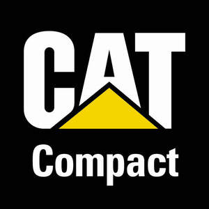

Trade Mark Journal No.2025/037 12 September 2025
UK00004253318 22 August 2025 (7,9,12,35,37,42)

- Class 7
- Machines for use in agriculture, compaction, construction, cleaning, defence, demolition, earth conditioning, earth contouring, earth moving, forestry, landscaping, lifting, marine propulsion, material handling, material scrapping, mining, mulching, oil and gas distribution, oil and gas exploration, oil and gas production, quarrying, paving, pipelaying, power generation, road building and repair, site preparation and remediation, transportation, vegetation management, waste management, air and space exploration; machine tools, power operated tools; motors and engines, except for land vehicles; machine coupling and transmission components, except for land vehicles; generators; alternators; electric construction machines; electric mining machines; loaders [earth moving machines]; excavators; dozers [machines]; telehandlers [machines]; compactors; road rollers; tamping rollers [machines]; road paving machines; screeders [machines]; motor graders [machines]; skid steer loaders; snow removal machines; parts, fittings and components for all the aforesaid goods.
- Class 9
- Navigation, surveying, photographic, measuring, signalling, detecting, testing and inspecting apparatus and instruments; apparatus and instruments for conducting, switching, transforming, accumulating, regulating or controlling the distribution or use of electricity; apparatus and instruments for recording, transmitting, reproducing or processing sound, images or data; protective and safety equipment; computer software; electric wire, harnessing, gauges and switches; electronic displays; electronic connectors, terminals, and controls; circuit breakers; fuses; leveling rods; power inverters; electrical parts and fittings for land vehicles, machinery, and equipment, namely, amplifiers for wireless communications, antennas, and batteries; electric relays; radios; electric cables; converters; speakers; glasses; mobile phones and tablets; solar panels for the production of electricity; batteries for construction, forestry and mining equipment; battery chargers; chargers for electric batteries; cells [electric]; photovoltaic cells; battery charging equipment; charging stations for electric vehicles; downloadable computer software for providing information related to operation and maintenance of machines and vehicles for use in agriculture, compaction, construction, cleaning, defence, demolition, earth conditioning, earth contouring, earth moving, forestry, landscaping, lifting, marine propulsion, material handling, material scrapping, mining, mulching, oil and gas distribution, oil and gas exploration, oil and gas production, quarrying, paving, pipelaying, power generation, road building and repair, site preparation and remediation, transportation, vegetation management, waste management, air and space exploration; downloadable computer software for providing information related to operation and maintenance of internal combustion engines and generators; downloadable software in the nature of a mobile application related to machines and machine tools for use in compaction; computer hardware for the collection, transmission, and processing of data of machines and vehicles for use in construction, paving, and compaction; measuring apparatus and instruments related to machines and vehicles for use in construction, paving, and compaction; electronic control units; accelerometers; data processing apparatus and equipment related to machines and vehicles for use in construction, paving, and compaction; onboard computers for machines and vehicles for use in construction, paving, and compaction; navigation apparatus for vehicles [on-board computers]; satellite-aided navigation systems; vibration, temperature, infrared, and pressure sensors for machines and vehicles for use in construction, paving, and compaction; telematic apparatus for machines and vehicles for use in construction, paving, and compaction.
- Class 12
- Vehicles; apparatus for locomotion by land; land vehicles for use in agriculture, compaction, construction, cleaning, defence, demolition, earth conditioning, earth contouring, earth moving, forestry, landscaping, lifting, marine propulsion, material handling, material scrapping, mining, mulching, oil and gas distribution, oil and gas exploration and oil and gas production, quarrying, paving, pipelaying, power generation, road building and repair, site preparation and remediation, transportation, vegetation management, waste management, air and space exploration; electric vehicles; engines for land vehicles; trucks; loaders [fork-lift trucks]; dumper trucks; tractors; parts, fittings and components for all the aforesaid goods.
- Class 35
- Retail services in relation to vehicles, equipment, machinery and machine tools for use in agriculture, compaction, construction, cleaning, defence, demolition, earth conditioning, earth contouring, earth moving, forestry, landscaping, lifting, marine propulsion, material handling, material scrapping, mining, mulching, oil and gas distribution, oil and gas exploration, oil and gas production, quarrying, paving, pipelaying, power generation, road building and repair, site preparation and remediation, transportation, vegetation management, waste management, air and space exploration, and parts therefor; retail services in relation to compaction equipment; retail services in relation to engines and power generation equipment, and parts therefor; online retail services in relation to machinery and vehicles for use in construction and compaction; online retail services in relation to parts for vehicles, equipment, and machinery for use in agriculture, compaction, construction, cleaning, defence, demolition, earth conditioning, earth contouring, earth moving, forestry, landscaping, lifting, marine propulsion, material handling, material scrapping, mining, mulching, oil and gas distribution, oil and gas exploration, oil and gas production, quarrying, paving, pipelaying, power generation, road building and repair, site preparation and remediation, transportation, vegetation management, waste management, air and space exploration; online retail services in relation to parts for engines and power generation equipment; retail services in the field of construction equipment, mining equipment and generators; retail services in relation to machine tools; retail services in relation to industrial oils, greases and lubricants; retail services in relation to clothing, footwear, headwear, toys, bags, watches, eyewear and printed matter; arranging and conducting auctions; on-line auction services; providing a searchable database, via the internet, of used construction, compaction, mining, material handling, agricultural, paving, and forestry machinery for sale or rent; advertising of business web sites; banner advertising; preparation of audio and/or visual displays for businesses; providing marketing consulting in the field of social media; advertising and marketing services provided by means of social media.
- Class 37
- Repair, installation, servicing, and maintenance of vehicles, equipment and machines for use in agriculture, compaction, construction, cleaning, defence, demolition, earth conditioning, earth contouring, earth moving, forestry, landscaping, lifting, marine propulsion, material handling, material scrapping, mining, mulching, oil and gas distribution, oil and gas exploration, oil and gas production, quarrying, paving, pipelaying, power generation, road building and repair, site preparation and remediation, transportation, vegetation management, waste management, air and space exploration; machinery installation; rental of equipment, namely machines and machine tools for use in compaction, construction, cleaning, defence, demolition, earth conditioning, earth contouring, earth moving, landscaping, lifting, marine propulsion, material handling, material scrapping, mining, mulching, quarrying, paving, pipelaying, road building and repair, site preparation and remediation, transportation, waste management, air and space exploration; remanufacturing of vehicles; vehicle battery charging; charging of electric vehicles; charging of batteries and power storage devices, and rental of equipment therefore.
- Class 42
- Providing temporary use of a non-downloadable web application for providing information related to operation and maintenance of machinery and vehicles for use in agriculture, compaction, construction, cleaning, defence, demolition, earth conditioning, earth contouring, earth moving, forestry, landscaping, lifting, marine propulsion, material handling, material scrapping, mining, mulching, oil and gas distribution, oil and gas exploration, oil and gas production, quarrying, paving, pipelaying, power generation, road building and repair, site preparation and remediation, transportation, vegetation management, waste management, air and space exploration; providing temporary use of a non-downloadable web application for providing information related to operation and maintenance of internal combustion engines and generators; providing temporary use of a non-downloadable web application related to machines and machine tools for use in compaction; software as a service [SaaS]; design and development of computer hardware and software related to the operation and maintenance of machinery and vehicles for use in construction, paving, and compaction; construction, paving, and compaction machine condition monitoring; performance testing related to machines and machine tools for use in construction, paving, and compaction; analysis and testing services relating to machines and machine tools for use in construction, paving, and compaction.
Caterpillar Inc.
Representative: Hogan Lovells International LLP